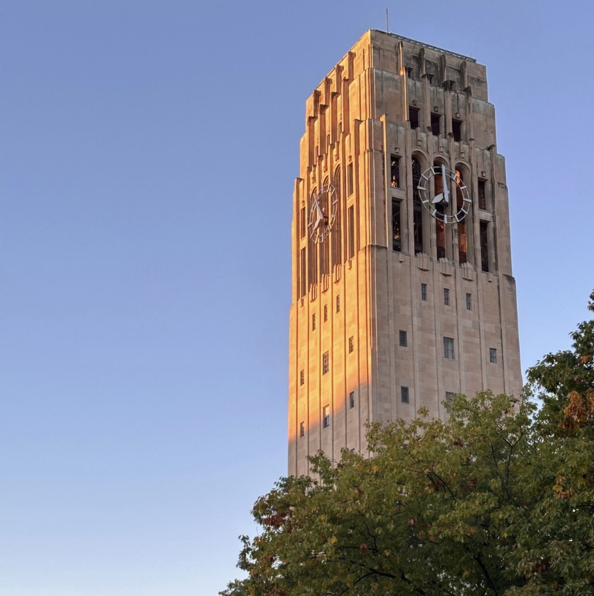

Study Spaces at U-M is a tool designed to help you find and reserve designated study spaces, computer stations, a space for you to take a remote class, or just a dedicated quiet touchdown spot between classes.

This guide is set up to help you be successul inside and outside of the classroom.
Finding comfortable places to study on campus is key to staying focused and feeling relaxed, which makes it easier to get things done and enjoy your study time more.
Study Spaces at U-M is a tool designed to help you find and reserve designated study spaces, computer stations, a space for you to take a remote class, or just a dedicated quiet touchdown spot between classes.
Are you a first-generation college student? Being a first-generation student comes with its own unique challenges, but finding the right guidance and support can help you feel more confident and connected throughout your college journey.

We hope this site helps you open doors and connect with U-M’s community of first-generation students and those who will support and encourage you throughout your journey
Maize & Blue Cupboard is a resource created to help U-M students, staff, and faculty access healthy, nutritious food. Whether you're in need of groceries, kitchen tools, or cooking tips, the pantry is here to ensure you have everything you need to eat well and feel supported.

The pantry serves as a key resource for your well-being, offering both essential nourishment and a connection to a supportive network within the U-M community.
Prioritizing mental health is crucial for student success, and the following section will provide valuable resources and support to help students maintain their well-being.